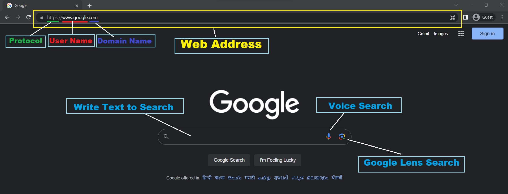

a. Introduction
b. History and users
c. Basic Terminology
d. Internet connectivity
a. Intro of Email & Gmail
b. Gmail Account Creation
c. Send Mail with attachment
d. Service of Google
a. Intro of E-Shopping
b. Advantage and Disadvantage
c. Precaution(सावधानी)
d. Complete process of Online Shopping
a. Debit Card
b. Credit Card
c. Net-Banking
d. UPI
e. Cash / Chalan / RTGS
a. Government Service such as: -
Income(आय), Resident(अवास), Caste(जाति), Character(चरित्र),OBC, EWS Certificate.
b. Scholarship Service for Student
c. Education Service
d. Online Form fill up.
e. Other service of Internet
a. Facebook ( FB )
b. Instagram ( INSTA )
c. Twitter
d. WhatsApp
Internet is derived from two words.
Inter (International) + Net (Network).
Internet is a global network of Computer that connects millions of users together across the world.
1. The seed of Internet was placed in 1989 by ARPANET organization U.S.A.
ARPANET (Advanced Research Project Agency Network)
2. “Tim Berners Lee” was the founder of WWW (World Wide Web).
WWW is also know as W3C (World Wide Web Consortium(संघठन)).
3. Wint Cerf is the founder of Internet.
4. “Cern” was the first website of Internet.
1. The use of Internet is Rapidly (अतयंन्त तेजी से ) increasing day by day.
2. At present, there are 760 million users of Internet in the world.
3. The following table display the user of Internet.
| Users | 2005 | 2010 | 2017 | 2019 | 2021 |
|---|---|---|---|---|---|
| World Population | 6.5 billion | 6.9 billion | 7.4 billion | 7.75 billion | 7.79 billion |
| Users Wordl wide | 16% | 30% | 48% | 54% | 63% |
| Users in Developing | 8% | 21% | 42% | 47% | 57% |
| Users in Developed Country | 51% | 67% | 81% | 87% | 90% |
4. China has most Internet users.
5. The speed of Internet is maximum in Monaco (319 Mb/s)
6. At present there are 59% Internet users in India.
There are different terms of Internet such as:-
A software that is used to access Internet is called Web Browser.
a. Internet Explorer
b. Microsoft Edge
c. Google Chrome
d. Mozilla Firefox
e. Opera
It is a part of Web Browser that is used to search any content can be search in three way.
a. By writing the text
b. By Voice Search
c. By using Google lens
A collection of webpages is called website. It is the unique address of Internet. That helps to directly perform any task.
There are three rules to write(open) website.
a. It is always written in lower case.
b. There is no space allowed between two words.
c. Spelling must be correct.
Note:-
1. Website is always written in Address-bar [ F6 ].
2. There are two parts of Website
a. User Name
b. Domain Name

Examples:-
1. www.vctcpaliganj.com
www.vctcpaliganj = User Name
.com = Domain Name
2. www.ssc.nic.in
www.ssc = User Name
.nic.in = Domain Name
A compony that provides the service of Internet to the users is called ISP.
Example:-
Airtel, Jio, BSNL, Vi etc.
A rules and regulation that help to access internet is called protocol.
There are two types of Protocol.
a. HTTP ( Hyper Text Transfer Protocol )
b. FTP ( File Transfer Protocol )
There are five alternate methods to connect Internet in PC.
a. Ethernet Cable
b. Broadband Connection
c. Modem and Router
d. Wi-Fi (Wireless Fidelity)
e. Optics Cable
Its stands for electronic mail a message sent using any platform of Internet such as Google, Yahoo, Rediff, Hotmail etc.
A message sent using Google id is called Gmail (Google mail).
1. Open any Web Browser and search “Sign up Gmail”.
2. Click on the first option and then select “create an account” option.
3. Fill the details such as First Name, last Name, Email-id, Password, Confirm Password, Date of Birth, Gender,
Mobile Number.
4. Finally click on “I Accept / I agree”.
Using “Sing in” option we can open the existing account by writing ID and Password.
To close the active Email ID.
Using this option we can send any mail / message / or attachment ( Document , Picture or any file up to 25 MB).
It stored all the received mail.
It stored all the mail that is failed due to any reson.
a. Incorrect Email Id
b. Network Issue
c. Uploading Attachment Problem
It store all the successful sent mail.
It store all the important mail that is marked as star in form inbox.
It also store the received mail for advertisement purpose.
The Mail stored in spam automatic deleted after 30 days.
It store the deleted mail.
Bin is automatic clear after 30 days.
It is the latest process to sell and purchase any product and service using online platform.
Some Shopping sites are:-
1. Flipkart
2. Amazon
3. Meesho
4. Myntra
5. Shoppe
6. Snapdeal
7. Jabong
8. E-bay
9. A Jio
10. Tata Neo
11. Shop clues
12. Shoppers stop
13. Pharm Easy
14. Nyika
15. Lens kart
16. Home shop 18
17. Paytm mall
1. Door to Door delivery of product.
2. Easy return & replacement policy.
3. Cash back and coins provided in each purpose.
4. Price of products is less than Market price.
5. “Pay you letter” facility are also provided to Plus Member.
1. We cannot verified the product physically.
2. Size and color of the product may be differ as shown in an image.
3. Fear of account hacking and leaking of personal details.
1. View the product and its details before placing the order.
2. Check return and replacement policy.
3. Check expected date of delivery by writing pin code.
4. We must check rating and review of the product provided by customer.
5. We must remember the id (A/C) that is used to purchase the product.
There are different method to pay the amount for online service.j
1. Debit Card (ATM Card)
2. Credit Card
3. Net banking
4. UPI (Unified Payment Interface)
5. COD (Cash On Delivery)
There are many services provided by Internet to their user.
We can receive different types of certificate such as:-
Income, Caste, Residence, NCL (None Creamy Layer), EWS ( Economically Weaker Section ), and Character.
Link :- serviceonlin.bihar.gov.in
Using different website we can apply for the scholarship.
Medhasoft.bih.nic.in
Pmsonline.bih.nic.in
This website helps to apply the scholarship form of postmatric. This form can be applied by any student who have passed the Matrick exam and studying in higher classes.
Note:-
We need the following details to apply the form.
a. Basic details such as:- Name, Father, Mother etc.
b. Scan copy of Marksheet, Aadhar card, Income, Caste, Resident, and payment receipt.
c. Bonafide certificate issued by school or college.
d. Active Mobile no and email id.
It is official website of railway from where we can book ticket of train, bus, flight, hotels etc.
Note:-
1. To book any ticket, we need to login out account in the related website using Id & Password.
2. Id and Password is created using sign up process by filling the following details such as Name, Id, Mobile No, Email Id , and custom password.
3. During booking the ticket of train and flight , we need to write the passenger detail.
There are different website that are used for education purpose.
it helps to convert document of pdf in word format so that we can edit the document.
This website helps to perform the pdf related work such as:- merge pdf, split pdf, compress pdf etc
It helps to convert picture (image in pdf format)
Using this website, we can set password in the pdf so that it cannot be open by any other user.
This website is used to practice for the online exam.
At present all the form is filled using different online platform.
To fill any form, there are four steps.
1. Registration process
2. Form fill up
3. Document upload
4. Make payment
To fill any online form, we need to registered ourself by filling the following details such as:-
Name, Father, Mother, DOB, 10th Roll No, Mobile No, and Email Id.
Note:-
After completing registration process, we get “ID and Password” on registered Mobile No, and Email Id.
After receiving ID and Password, we need to login our account and fill the additional detail.
Such as:-
Identification mark, Address detail, Exam center, Aadhar No, Gender Medium of Exam, Age Relaxation, Caste, Category etc.
After completing the form, we need to upload the document according to instruction given.
a. Photo (jpg)
b. Signature (jpg)
c. Aadhar card
d. 10th Marksheet
e. Other education qualification
f. Relaxation certificate
Finally we make payment using Debit card, Net banking, UPI.
Note:-
In some form, Fee payment is not required for female candidate.
Using “uidai.gov.in”, we can perform the Aadhar related work.
UIDAI ( Unique Identification Authority of India )
Two service are provided by “uidai.gov.in” website.
a. Download Aadhar
b. Track status
c. Change Name Aadhar DOB
d. Order PVC card
e. Bank appointment
a. New Aadhar card
b. Update any detail
c. All the Aadhar related work
Note:-
To get the benefit of online Aadhar service, Mobile Number must be registered with Aadhar.
Using “pan.utiitsl.com” all the work of Pan Card can be done.
The legal charge of New Pan Card is 108 rupees.
Using “eci.gov.in” all the election related work can be done.
We can also apply for new Voter Id Card and search the Name in voter list.
ECI = Election Commission Of India
Using “biharbhumi.bihar.gov.in” all the papers of the land can be created such as:-
1. Mutation
2. LPC ( Land Possession Certificate )
3. Track Land status by using PLOT number, KHATA number, KHESHRA number.
Social media is online platform to share out thought, expression and any types information across the world.
a. Easy to share any information.
b. To get any types of information related to any topics.
c. No age restriction and time limit to access any knowledge
a. Fear of Data hacking.
b. Destroy the precious time of teenager.
c. Fake rumors disturb us mentally.
a. Facebook ( FB )
b. Instagram ( Insta )
c. Twitter ( x )
d. Telegram
e. WhatsApp
f. Short Video app
It is malicious programmed of computer that is auto execute and interrupt the computer to work properly.
There are following symptom of virus.
1. Slow down pc
2. Rebooting problem
3. Auto create and delete file and folder.
4. Corrupt the Installed apps.
Way of spreading virus
1. Email attachment
2. Using unauthorized website
3. Connecting USB-Drive
A programmed of computer that work against virus is called Antivirus.
There are two types of Antivirus .
1. General Antivirus
2. Total Security Antivirus